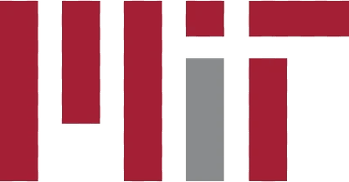

5
項核心服務，一站式支援
4
步個人化升學路線圖
1:1
每位學生專屬顧問
[XX]+
已指導學生
升學院校 · DESTINATIONS
學生曾升讀的院校
我們的學生曾獲以下知名大學取錄，包括：

痛點 · CHALLENGES
升學路上，您是否也遇到這些難題？
國際升學的競爭和資訊都比以往更複雜。以下是我們最常聽到家長和學生提出的困擾。
資訊太多，真假難分
排名、中介、論壇及社交媒體說法各異，家長難以判斷該相信誰。
名校競爭愈來愈激烈
頂尖大學學位有限，單靠優異成績已難以脫穎而出。
不知道如何提升背景
科研、比賽、活動五花八門，家長不清楚哪些才真正有助申請。
中介流水線，千篇一律
模板式選校、雷同的文書，難以展現學生獨特的故事。
規劃太遲，錯失良機
課程選擇、公開考試與申請期限環環相扣，起步太遲可能錯過機會。
入讀後難以適應
獲得取錄只是開始。不少學生發現學術寫作、批判思維及海外生活比想像中困難。
升學選擇很多，下一步卻不清楚？
家長可能正在煩惱
- 孩子不一定適合單一升學路線，但不知道有哪些可行選項。
- 國際學校、課程、學分和升學地區的資訊繁多，難以比較。
- 擔心只在申請季才開始準備，錯過建立學業與活動經歷的時間。
- 想讓孩子接觸研究或學術活動，卻難以判斷課程是否有實際內容與成果。
- 申請、考試、選科和截止日期分散，家庭很難掌握全盤進度。
學生可能正在煩惱
- 不確定自己的成績、興趣和能力適合哪種學校或專業。
- 不知道如何規劃 GPA、AP 或標準化考試，以及課外活動的先後次序。
- 對研究、比賽或暑期課程有興趣，卻不知道如何找到合適的主題與指導。
- 有經歷和想法，卻不懂如何整理成文書、履歷或面試中清晰的表達。
- 希望保留不同升學可能性，卻缺乏一個能隨進度調整的計劃。
我們從學生目前的起點出發，協助家庭看清選擇、排定優先次序，並逐步推進升學計劃。
每一個難題，都有對應的規劃方案。
了解我們的服務 →核心價值 · CORE VALUES
每位學生的路都不同，我們的指導亦然。
我們與每位學生及家庭緊密合作，了解他們的現況與目標——由選校到升讀大學，始終如一的同行夥伴。
以學生為本
規劃以每位學生的興趣、性格和目標為依歸——而非單看排名。
重成長，不走捷徑
出色的申請源於真正的學習、真誠的投入和長期的努力。
家長是合作夥伴
家長參與每個重要決定，並獲得清晰解說和定期更新。
我們的服務 · OUR SERVICES
每個階段的支援
國際學校及課程規劃
找出最適合學生強項及未來目標的學校與課程——IB、A-Level、AP 等。
學術及 GPA 支援
選科建議、溫習規劃及針對性支援，建立穩定出色的學業成績。
課外活動規劃
選擇能反映學生真正興趣的活動、比賽、專題研究及暑期課程。
本科及研究生申請
大學選校名單、個人陳述、文書、面試及截止日期——逐步跟進。
大學過渡支援
為獨立學習、海外生活及充滿自信的大學第一年作好準備。
研究與學術輔導
按興趣及專業方向配對導師，指導選題、文獻閱讀、研究方法及成果整理。
暑期學術課程
暑期研究項目，配合教授授課、小組指導及成果展示。
美國高中課程及學分規劃
在國內就讀期間，透過線上美國高中課程及學分規劃，銜接海外升學。
我們的方法 · OUR APPROACH
清晰規劃，貫徹執行
-
1
評估
我們深入了解每位學生的興趣、強項及需要。
-
2
規劃
我們制訂具清晰里程碑的個人化路線圖。
-
3
跟進
我們定期檢視進度，按需要調整計劃。
-
4
匯報
家長隨時清楚目前進度及下一步安排。
創辦人的話 · FOUNDER'S MESSAGE
[創辦人的簡短寄語——為何創立中昊寰宇留學，以及家庭與我們合作時可以期待甚麼。]
[創辦人姓名]
中昊寰宇留學創辦人